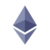
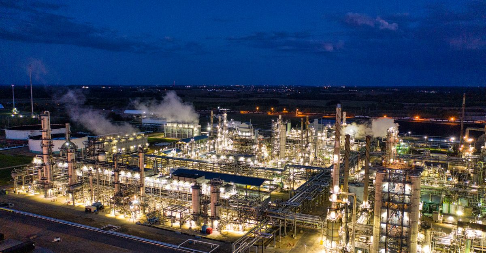

週次市場レポート2026年9月14日（月）

今週の3行まとめ
- 物価（CPI）が下がらず、市場の予想は「利下げ」から一気に「利上げ」へ反転。米10年金利は 4.97% と警報ライン 5% の目前まで上昇しました。
- BTC は 50週移動平均線の上抜けに2週連続で失敗し $77,000 台へ。ただし 7月安値を割る動きはなく、「底打ち説」の否定材料も出ていません。
- 勝負は今週です。明日 9/15 に米クラリティ法の上院採決、あさって 9/16 に FOMC。先週の配信で立てた見立ての答えがこの2日間で出ます。
| 論点 | 結論（1行） |
|---|---|
| BTC 今週 | $79.9K → $77.6K（−2.9%）。50週線（約 $81,041）には一度も届かず |
| 米 CPI（9/11） | 前年比 3.4% で前月と同水準。「同水準なら利上げ観測が強まる」という警告条件がそのまま成立 |
| FOMC 観測 | 25bp 利上げの織り込みが 46% → 79〜87% へ急騰（予測市場集計） |
| 警報器 | 金利 4.97%（⚠️ 注意突破）／信用スプレッド 2.70%（● 平静）／原油 $102.6（🔴 増幅） |
| ETF フロー | 週間 −$462.7M と10週ぶりの流出。一方で大口は60日で 46,420 BTC 買い増し |
| アルト市場 | 急騰銘柄（+20%超）は上位100位内で3件のみ。BTC への資金退避が継続 |
| シナリオ | 値動きは「下値切り上げの浅い調整」で底打ち説と矛盾せず。ただし利上げなら深押し説の燃料が増える |
3連イベント — CPI の結果と、これから 48時間
先週の配信で「今週・来週が分岐点」とお伝えした3つのイベントのうち、1つ目の答えが出ました。残り2つが今週前半に集中します。
先週の答え合わせ — 9つの観点
先週の配信（9/7）で立てた見立てを、1週間後の実際の数字で検証します。これが本レポートの中心です。
| # | 観点 | 先週の見立て | 今週の実際 | 示唆 |
|---|---|---|---|---|
| 1 | 50週線の実線判定 | ヒゲでは上抜け・実線（週足終値）判定は今週へ持ち越し | 突破失敗 週を通じて一度も 50週線（$81,041）に届かず $77K 台で終了 | 50週線は明確に抵抗線として機能。「最初の突破試行は失敗しやすい」という過去の経験則どおりの展開 |
| 2 | シナリオ「③底打ち済み 40%」 | ③を 30%→40% へ引き上げ（①+②で 60%） | 週間 −2.9% の浅い押し。週安値 $76,392。7月安値の割り込みはなし | 「下値切り上げを保った浅い調整」で③と矛盾せず。ただし利上げ確定なら②深押し説の燃料が増える。①を支持する動きはゼロ |
| 3 | 米 CPI | 前月 3.4% と同水準なら利上げ観測が強まる（外部リサーチの警告） | 警告条件が成立 3.4% で同水準・コア上振れ | 利上げ織り込みは 87% 集計まで急騰。あさっての FOMC が最大イベントに |
| 4 | クラリティ法 9/15 | 採決が分岐点 | 正確には「審議入りの手続票」（60票必要）。年内成立確率は約10%へ低下、予測市場は否決に傾斜 | 失敗は織り込み済み。サプライズは「可決」側 |
| 5 | 警報器① 10年金利 | 4.79%（注意 4.8%／警報 5%） | 4.97% 注意ラインを確定突破・2023年10月以来の高水準 | 警報 5% まで残り僅か。FOMC の結果と金利見通しがトリガーになり得る |
| 6 | 警報器② 信用スプレッド | 2.65%（注意 3%） | 2.70% 微増にとどまり平静 | 金利急騰でも信用市場は無風＝「金利ショックであって信用ショックではない」。今週唯一の安心材料 |
| 7 | 原油 WTI | $92（$90 超で警報点灯中） | $102.6 4カ月ぶり高値。産油国のパイプライン停止が主因 | ガソリン経由で CPI を押し上げ済み。供給ショック型インフレが利上げを延命させる悪い組み合わせ |
| 8 | 注目銘柄フォロー | ETH／LINK／HYPE／ZEC を継続観察 |  ETH $2,514（±0%）／LINK $11.39（−13.2%）／ HYPE $80.05（−8.2%）／ HYPE $80.05（−8.2%）／ ZEC $1,117（−6.5%） ZEC $1,117（−6.5%） | 4銘柄すべて軟調（ETH のみ横ばい・ETF は4週連続流入）。アルトが BTC 以上に売られる典型的リスクオフ |
| 9 | BTC ドミナンス | 上昇中（アルトへの逆風） | 57.4%。別指標では 60% 上抜けの分析も。アルトシーズン指数は 33→27 へ低下 | BTC への資金退避は継続・加速。アルト全面回復はまだ遠い |
シナリオの現在地（先週時点の講師想定・今週は更新なし）
配信休止のため確率の更新はありません。来週の配信で、FOMC の結果を踏まえた見直しが行われる見込みです。
警報器ダッシュボード — 定点観測

先週の配信で導入した「相場の安全確認」の3つの計器です。黒い縦線が先週の位置、色付きバーが今週の位置を示します。
外部リサーチの視点 — 「底値の判定ウィンドウ」

講師が定点観測している外部リサーチサイト（海外アナリストの隔週レポート）の最新号は、まさに今週を「底値の判定期間」と位置づけていました。要点を紹介します。
- 判定の枠組み
- 「重要サポート帯が 9/11 の CPI と FOMC の2イベントに耐えれば、2026年7月安値がこの弱気サイクルの底として確定する。逆に 25bp 利上げなら、株式市場主導で安値の再テストへ」——前号までの「底は今年の秋ごろ」という見方から、「底はすでに 7月に付いた可能性があり、今まさに判定中」へと一歩前進しました。
- 50週線の経験則
- 「50週移動平均線はすべての弱気サイクルでトレンド転換の鍵を握ってきた。最初の突破試行は通常失敗する。今がその最初の試行だ」——今週の値動き（2週連続の突破失敗）は、この経験則どおりの展開でした。失敗＝弱気確定ではなく、「初回はそういうもの」という含みです。
- 金利への警告
- 「CPI が前月と同水準（3.4%）なら、年内利上げの確率が上がる」——この警告条件が今週そのまま成立しました。同レポートは市場が利下げを見込んでいた時期から一貫して「利上げの可能性は生きている」と指摘しており、少数派の読みが的中した形です。
- 弱気材料の後退
- 今号では、対株式指数でのビットコインの弱気見通しが「強いサポートが機能している」へと軟化し、弱気判定の根拠に使われていたチャートが1枚削除されました。基調は慎重（リスクオフ・金優位）のまま、細部では明るい変化も見られます。
次号は 9/21 前後の見込みで、ちょうど「判定ウィンドウの答え合わせ号」になります。来週の配信で扱う予定です。
今週の急騰銘柄 — 3件のみ、という事実
毎週恒例の「時価総額上位100位以内で7日間 +20% 以上」のスクリーニング。今週の該当はわずか3銘柄でした（先週は5銘柄）。急騰銘柄の少なさ自体が、市場全体のリスクオフを物語っています。
要因: 今週固有の大型発表は確認できず。9月のステーキング施策（〜10/1）・8月の新規上場・流通量の少なさ（品薄構造）に先物市場の過熱が重なった継続高です。
見方: 一過性リスク高め 施策終了（10/1）後に資金が残るかが分岐点。前回の施策終了直後には −12.7% の急落例があります。
要因: 大手 AI 企業の「チャット内容のプライバシー」を巡る騒動（9/9）で、プライバシー特化 AI への注目が急上昇し史上最高値を更新。裏側では発行量の削減・買い戻し導入・収益拡大という構造変化も進行中。
見方: 話題性×構造の複合 ニュースの熱は既に冷却中（高値から反落）。10/1 の追加発行削減後も水準を保てるかが試金石です。
要因: 10/15 に初期配分のロック解除が完全終了し、新規発行が約75%減る「供給の構造変化」への先回り買いが最有力。AI 向けストレージ需要の思惑も追い風。
見方: イベント前の過熱に注意 短期指標は過熱圏。「イベントを織り込んで当日に出尽くす」パターンの頻出例であることは押さえておきたいところです。
※ 個別銘柄の記載は市場観察の記録であり、売買をすすめるものではありません。
来週に向けて — 配信再開までの監視ポイント
答えが出るイベント
- 9/15（月）クラリティ法の手続票 — 60票に届くか。届けば大きなサプライズ、否決なら年内成立はほぼ消滅。
- 9/16（水）FOMC — 利上げ織り込み約8割の答え合わせ。実際の利上げ有無に加え、金利見通し（ドットチャート）の「年内あと何回」も重要です。
- 9/20（日）の BTC 週足終値 — 外部リサーチのいう「判定ウィンドウ」の締め切り。サポートを守り切れば「7月安値＝底」説が大きく前進、50週線 $81,041 の攻防と併せて確認します。
警報器の定点観測
- 10年金利 4.97% → 5.00% タッチの有無が最大の焦点
- 信用スプレッド 2.70% → 3% に近づく動きが出たら質的変化
- 原油 $102.6 → パイプライン復旧の続報で沈静化するか
そのほか
- 外部リサーチの次号（9/21 前後・判定ウィンドウの総括になる見込み）
- ETF フロー（週間 −$462.7M）の反転有無と、大口買い（60日で 46,420 BTC）との綱引き
- FIL の 10/15 イベント前の資金動向・BTW の施策終了（10/1）